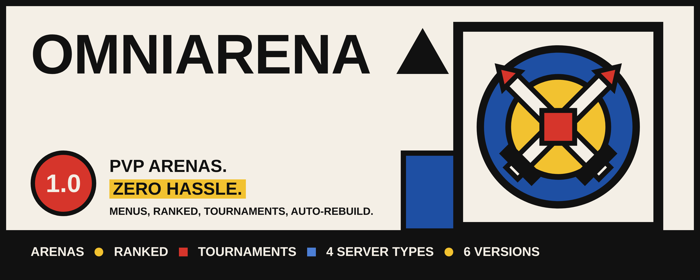
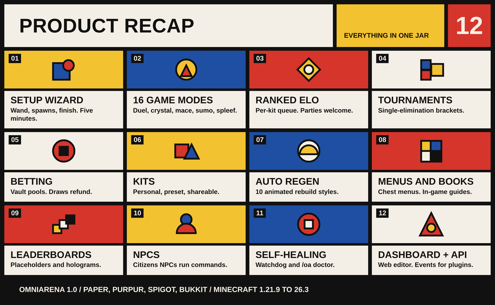
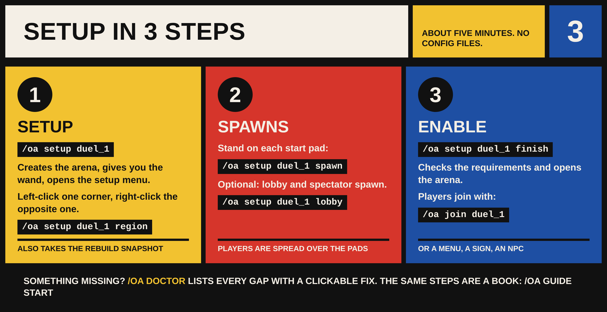
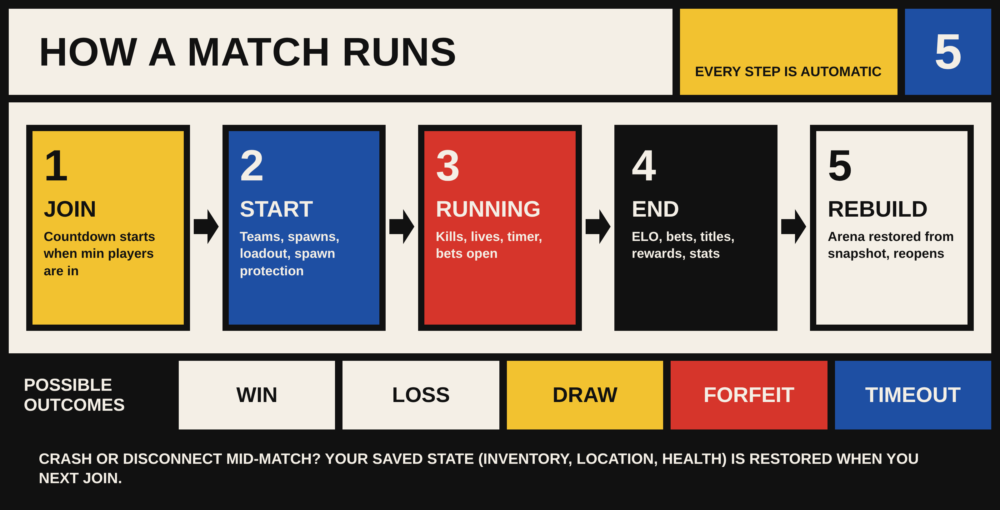
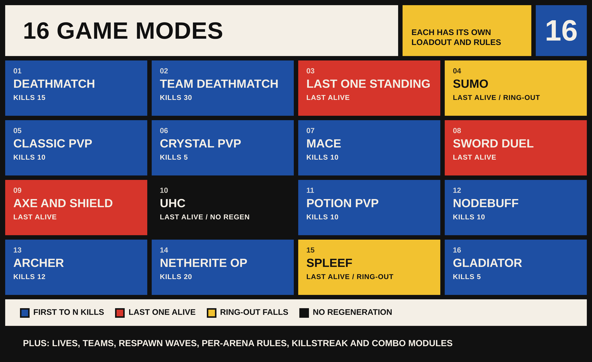
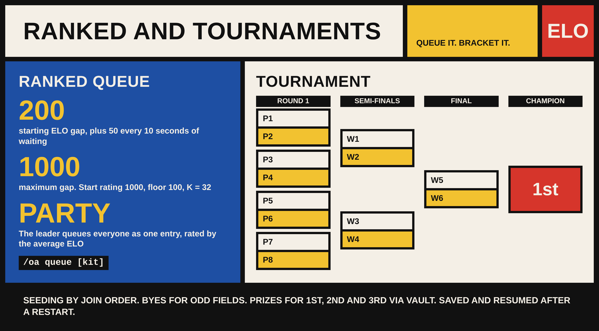
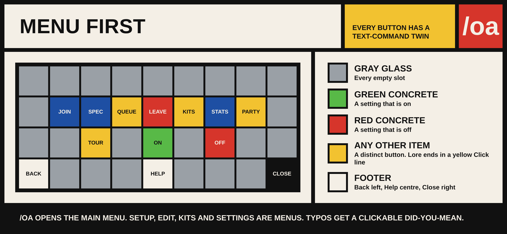
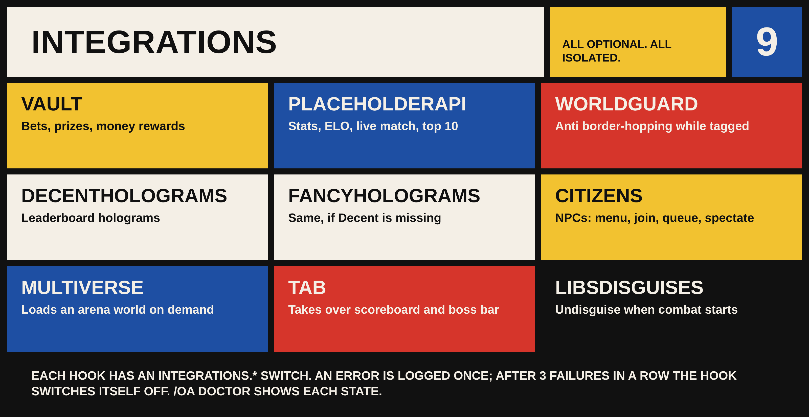
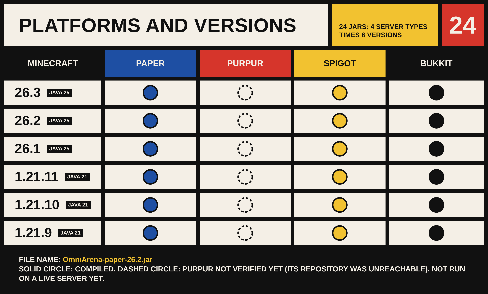

OmniArena is a PvP arena plugin that sets up in five minutes and looks after itself. Players join from a menu, a command or a sign and fight in 16 game types. Admins build an arena with a short wizard, and the plugin rebuilds it after every match.
Please read the honest status first. Version 1.0.0 has passing unit tests (they cover pure logic only), and the Paper, Spigot and Bukkit jars compile for all six Minecraft versions. The six Purpur jars could not be verified, because the Purpur repository was unreachable when they were built. Nobody has run OmniArena on a live server yet. The links to DecentHolograms, FancyHolograms, Citizens and Multiverse use reflection and are untested against the real plugins. Please try it on a copy of your server first. Details: Honest status.
finish command./oa guide./oa doctor.
OmniArena-<platform>-<mcversion>.jar.plugins/ and restart.Use Java 25 for 26.x servers and Java 21 for 1.21.x servers. Everything is stored as YAML in plugins/OmniArena/.

/oa setup duel_1 creates the arena, gives you the wand
(wand: left-click one corner, right-click the opposite corner)
/oa setup duel_1 region saves the region and takes the rebuild snapshot
/oa setup duel_1 spawn run on each start pad
/oa setup duel_1 finish checks everything and enables the arena
Then players type /oa join duel_1, use /oa menu, or click a sign (/oa sign create duel_1).
Tip: run
/oa doctorat any time. It lists what is missing, with a clickable fix.

team-enabled flag. Respawn types are instant, delayed and wave./oa spectate.After every played match the arena is rebuilt from a snapshot. It stays closed until the rebuild is done.
| Style | How it rebuilds |
|---|---|
SPHERE (default) |
From the centre outwards |
INSTANT |
Batched placement |
RISE / FALL |
Bottom to top, top to bottom |
SWEEP |
A plane across the arena |
TIME_REWIND |
Undoes the changes of the match in reverse |
GALAXY |
Four spiral arms |
HOLOGRAM_SCAN |
Glass preview, then real blocks |
METEOR_SHOWER |
Random impacts |
OVERGROWTH |
A flood fill from a few seeds |
Large jobs are spread over many ticks, so the server keeps running smoothly.
/kit: save, equip, rename, preview and share a kit with another player. Slots depend on permissions. An optional power cap removes overpowered enchants and banned items./oa kits: ten defaults (warrior, archer, tank and more), cooldowns and permissions.
Set a mode with /oa edit <arena> set game-mode <TYPE> or in the edit menu.
| Type | Goal |
|---|---|
| Deathmatch, Team Deathmatch | First to N kills (default 15 and 30) |
| Classic PvP, Mace, Potion PvP, NoDebuff | First to 10 kills |
| Crystal PvP, Gladiator | First to 5 kills |
| Archer | First to 12 kills |
| Netherite OP | First to 20 kills |
| Last One Standing, Sword Duel, Axe and Shield | Last player alive |
| Sumo, Spleef | Last alive, and falling out counts as a death |
| UHC | Last alive, with no natural regeneration |
Good to know: kill targets are defaults. An arena can override the goal or the target.

/oa queue [kit] joins the queue (queue leave and queue status do what they say). A matchmaking task runs every second. It pairs players by ELO. The allowed gap starts at 200 and grows by 50 every 10 seconds of waiting, up to 1000. A party leader queues the whole party as one entry. Only ranked matches change ELO (start 1000, floor 100, K = 32).
/oa tournament create <name> <arena> <max> starts a registration. It begins automatically when full, or when the creator runs start. Brackets are single elimination, one match at a time per arena. Prizes for 1st, 2nd and 3rd are paid through Vault. Tournaments are saved and resume after a restart. Tournament matches are not ranked.
With Vault and an economy plugin, players can bet on a participant of a live match: /oa bet place <arena> <player> <amount>. Winners share the pool in proportion to their bets. With a draw, or if nobody bet on the winner, every bet is refunded.

/oa opens the main menu. Setup, editing, kits and settings are chest menus too. The design is the same everywhere: empty slots are gray glass, green concrete means on, red concrete means off, and every other button is its own item with a yellow "Click ..." line. Back, Help and Close sit in the bottom row.
Every menu action has a text command twin with tab completion. A typo gets a did-you-mean with a clickable fix.
/oa guide opens a book with clickable topics. Players see play, kits, ranked, tournament, betting, pvp. Admins also see start, arena, regen, leaderboards, npc, doctor, config. The text is in plugins/OmniArena/guides.yml, so you can edit it.

| Plugin | What OmniArena does |
|---|---|
| Vault | Economy for bets, prizes and money rewards |
| PlaceholderAPI | The omniarena expansion |
| WorldGuard | Anti border-hopping while combat-tagged |
| DecentHolograms, FancyHolograms | /oa leaderboard holograms |
| Citizens | /oa npc: NPCs that open the menu, join, queue or spectate |
| Multiverse-Core | Loads an arena's world on demand |
| TAB | integrations.tab.takeover: true hands the scoreboard and boss bar to TAB |
| LibsDisguises | Removes a disguise when combat starts |
| LuckPerms | Hook only. No feature uses it yet |
Every hook has a switch (integrations.<name>). A hook that fails three times in a row switches itself off, and /oa doctor shows its state.
%omniarena_kills% %omniarena_wins% %omniarena_kd% %omniarena_elo% %omniarena_rank%
%omniarena_arena% %omniarena_state% %omniarena_alive% %omniarena_time_left%
%omniarena_top_<kills|wins|kd|elo>_<1-10>_<name|value>%
The full list is in the documentation. Leaderboard values come from a cache that refreshes about every 30 seconds. OmniArena has no built-in holograms. It uses placeholders and the two hologram plugins above.
backups/ first. Old config layouts are migrated automatically.broken/ and the plugin continues./oa doctor prints a report. /oa doctor fix runs every fix now.Root command: /oa (aliases /arena, /omniarena). /oa help lists everything.
| Command | What it does |
|---|---|
/oa menu |
Main menu |
/oa join [arena], /oa leave, /oa spectate [arena] |
Join, leave, watch (/join, /leave, /spectate work too) |
/oa list [arena] |
Arenas, or details of one |
/oa stats [player], /oa stats top [kills/wins/kd/elo] [n] |
Stats, ELO, rank, leaderboards |
/oa queue [kit] |
Ranked queue |
/oa bet ..., /oa tournament ... |
Betting and tournaments (/bet, /tournament) |
/oa guide [topic] |
Guide books |
/party ..., /kit ..., /pvp |
Parties, personal kits, PvP toggle |
/oa setup <arena> ... |
Arena wizard (admin) |
/oa edit <arena> [set/get <key> [value]] |
Edit menu or text edit (admin) |
/oa arena tp/delete/enable/disable <arena> |
Arena actions (admin) |
/oa regen <arena>, /oa regen snapshot <arena> |
Rebuild, re-snapshot (admin) |
/oa kits, /oa sign, /oa leaderboard, /oa npc |
Preset kits, signs, holograms, NPCs (admin) |
/oa settings, /oa reload, /oa web, /oa doctor |
Settings, reload, dashboard, health (admin) |
/oa plugin start/stop/restart/version |
Lifecycle (admin) |
Players need nothing special. These nodes default to true: omniarena.use, omniarena.kit.use, omniarena.queue, omniarena.bet, omniarena.spectate, omniarena.pvp, omniarena.tournament.create. Admin commands need omniarena.admin or a narrower node such as omniarena.admin.arena, .kit, .sign, .npc, .leaderboard, .stats, .reload or .doctor. Extra kit slots: omniarena.kit.slots.5 and omniarena.kit.slots.10.
plugins/OmniArena/config.yml has these sections: general, arenas, matches, regen, ranked, kits, rewards, betting, tournaments, pvp, visuals, integrations, web, health and advanced. Every key has its default and allowed values in a comment.
| Key | Default | What it does |
|---|---|---|
arenas.countdown |
10 |
Lobby countdown in seconds |
arenas.match-duration |
600 |
Match length in seconds |
matches.lobby-timeout |
120 |
Close a lobby below the minimum players after this long |
regen.style |
SPHERE |
Rebuild animation |
betting.min-bet / max-bet |
100 / 10000 |
Bet limits |
general.startup-banner |
full |
full, compact or off |
Change values with /oa settings, in the web dashboard, or in the file and /oa reload.
/oa web prints a login link. The dashboard listens on 127.0.0.1:8123 by default, so only the machine itself can open it. For remote use, put it behind an HTTPS reverse proxy. Tabs: dashboard, live matches, arenas, players, config and docs.
Other plugins can listen to ArenaPlayerJoinEvent (cancellable), ArenaPlayerLeaveEvent, ArenaMatchStartEvent, ArenaMatchEndEvent and ArenaKillEvent, and call the OmniArenaAPI facade.

| Platform | Notes |
|---|---|
| Paper, Purpur | Need a Paper-family server |
| Spigot, Bukkit | Run on Spigot, Bukkit and also on Paper |
Versions: 26.3, 26.2, 26.1 (Java 25) and 1.21.11, 1.21.10, 1.21.9 (Java 21). That makes 24 jars named OmniArena-<platform>-<mcversion>.jar. A paper or purpur jar on a non-Paper server disables itself with a message.
If something breaks, run /oa doctor and open an issue with the console log.
Which jar do I need?
Pick your server type and Minecraft version, for example OmniArena-paper-26.2.jar. If unsure, the spigot jar runs on Spigot, Bukkit and Paper.
Do I need Vault? Only for bets, tournament prizes and money rewards. Everything else works without it.
Is the arena rebuilt by itself?
Yes. Take the snapshot once with /oa setup <arena> region. After that every played match is followed by an automatic rebuild.
Can I turn off the animated startup banner?
Yes: general.startup-banner: off. Panels and plain consoles get a static banner anyway.
Can I change the guide books?
Yes. Edit plugins/OmniArena/guides.yml, then run /oa reload.
Does it use a database? No. All data is YAML.
My old config uses the old layout.
It is migrated automatically, and a backup goes to backups/.